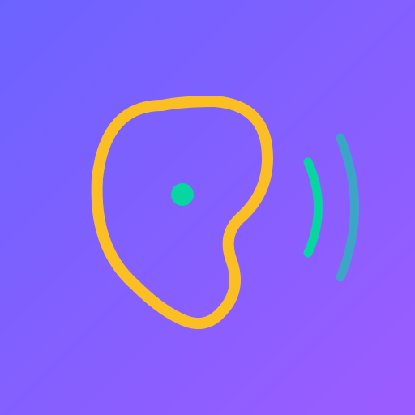
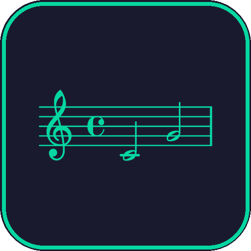
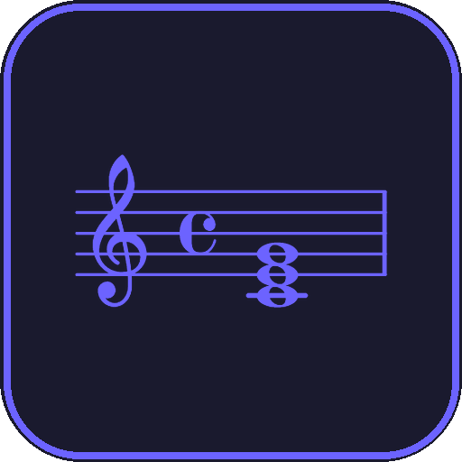
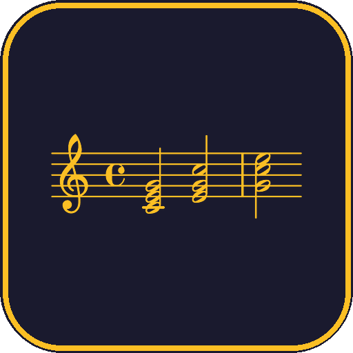
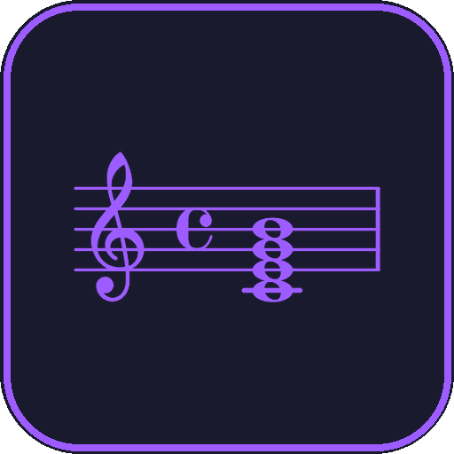
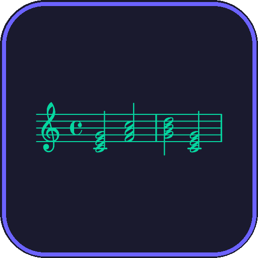
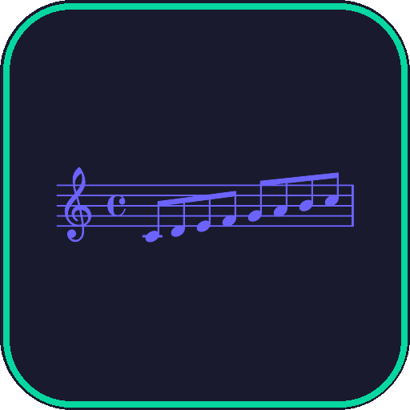
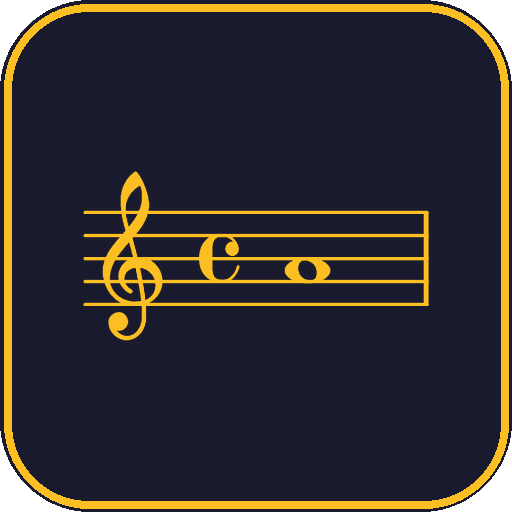

Haz clic para activar el sonido y comenzar

Melódicos y Armónicos

4 tipos básicos

Fundamental, 1ª y 2ª

Acordes de 4 notas

Secuencias Armónicas

Mayor, Menor y Modos

Diatónico y Cromático
Haz clic en cada tarjeta para escuchar el sonido